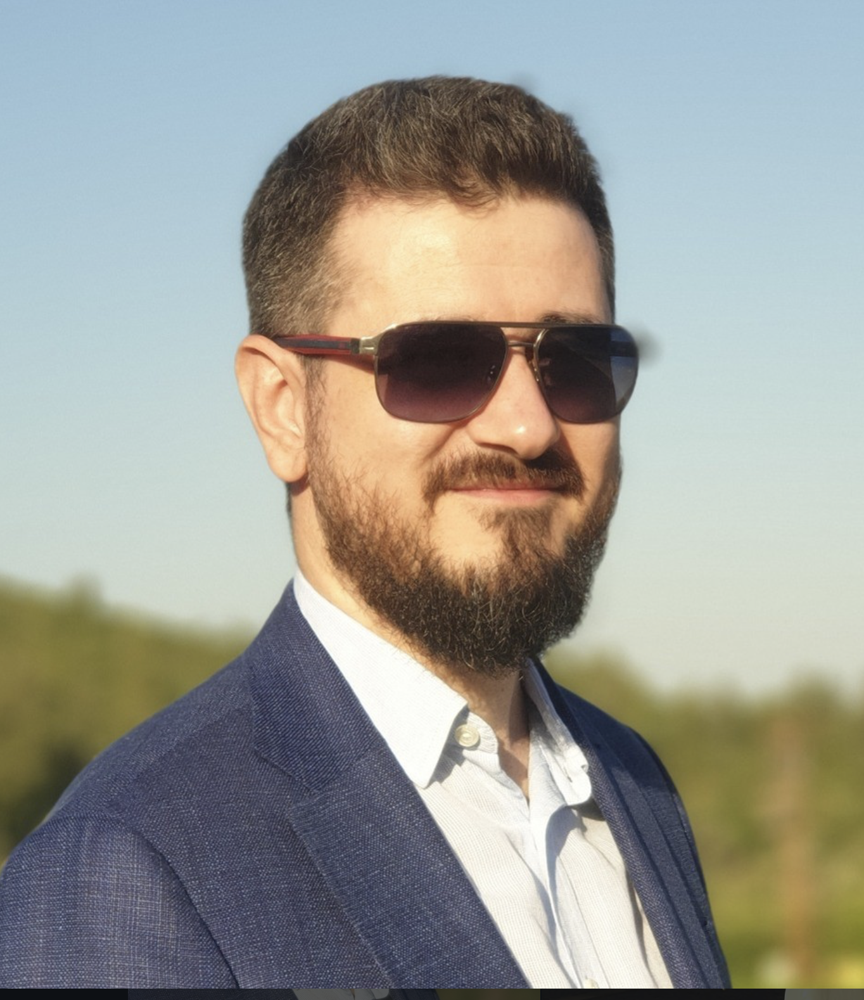
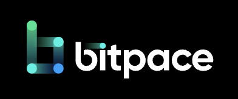
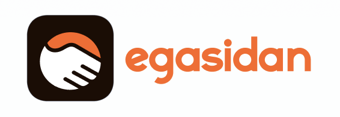

İlhan Kuzgun
Teknoloji Lideri, Ürün Yöneticisi & Girişimci
22 yılı aşkın süredir teknoloji, e-ticaret ve FinTech ekosistemlerinde ölçeklenebilir ürünler geliştiriyorum. Sadece kod veya ürün inşa etmiyor; doğru ekipler kurarak, vizyonu olan işleri büyütmeye odaklanıyorum.
Şu An Ne Yapıyorum?

Bitpace
Head of Product • Son 4 Yıl
Kripto ödeme sistemleri ve FinTech alanında ürün stratejilerine liderlik ediyorum. B2B ve B2C platformlarının global ölçekte büyüme süreçlerini yönetiyorum.

Egasidan.com
Kurucu Ortak • Özbekistan
Özbekistan pazarında faaliyet gösteren dijital girişimimizin kurucu ortaklarından biri olarak pazar büyümesi ve teknoloji altyapısına yön veriyorum.
Odak Noktalarım & Uzmanlık
Aile & Desteklediğim Projeler
Ghost to Guest Enstitüsü
Eşim Tubanur Bayram Kuzgun öncülüğünde kurulan ve benim de destekçisi olduğum bu enstitü, insanı ağırlama ve misafirperverlik sanatını akademik ve pratik bir vizyonla yeniden tanımlıyor.
Ekrandan Uzakta
Hayat sadece veri analizleri, API entegrasyonları ve ürün yol haritalarından ibaret değil. Dijital dünyadan fırsat buldukça ilgilendiğim ve değer verdiğim alanlar:
- 11 yaşında harika bir oğul babası
- Doğa & Tarım (Samsun'daki aile çiftliğimizde Ceviz/Fındık)
- Satranç
- Sivil Toplum (Kafkas-Çerkes Dernekleri)